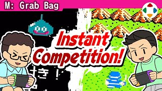
速览
疫情前，樱井家也常有客人来访；家里游戏丰富，不愁没东西玩。其中偶尔会进行一种对战：同时进行两份同一款游戏、比进度——叫「同时进行对战」吧。某款游戏「预备——开始」两人同时开始，先被打倒的输，或分数多的赢。和《游戏中心 CX》合作时就是这个玩法：他和有野课长同时开始同一款游戏比拼。特别适合一下就失误的街机游戏。有些游戏可以设定目标，如走得更远者胜；有了目标，连《勇者斗恶龙》也能变成对战游戏，例如「先打倒 3 只史莱姆的人赢」——看似非常简单，但能看到对手的进度，相当热闹。而且一旦失误或分出胜负，就算还想往下玩也立刻切换下一款，至少会玩几十款，感觉在考验各种「游戏肌肉」。需要让同一软件运行两份，能解决的话很推荐：朋友之间可以各带加入 Nintendo Switch Online 的 Switch；《任天堂世界锦标赛 FC 版》本身就有一款软件多人享受的机制。不妨试试非对战游戏的对战吧。
1. 同时进行对战 0:07
疫情前樱井家常有客人；家里游戏丰富，不愁没得玩。其中偶尔会玩一种对战：同时进行两份同一款游戏、比进度。
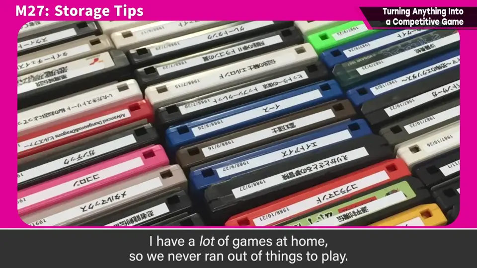
「预备——开始」两人同时开始，先被打倒的输，或分数多的赢。
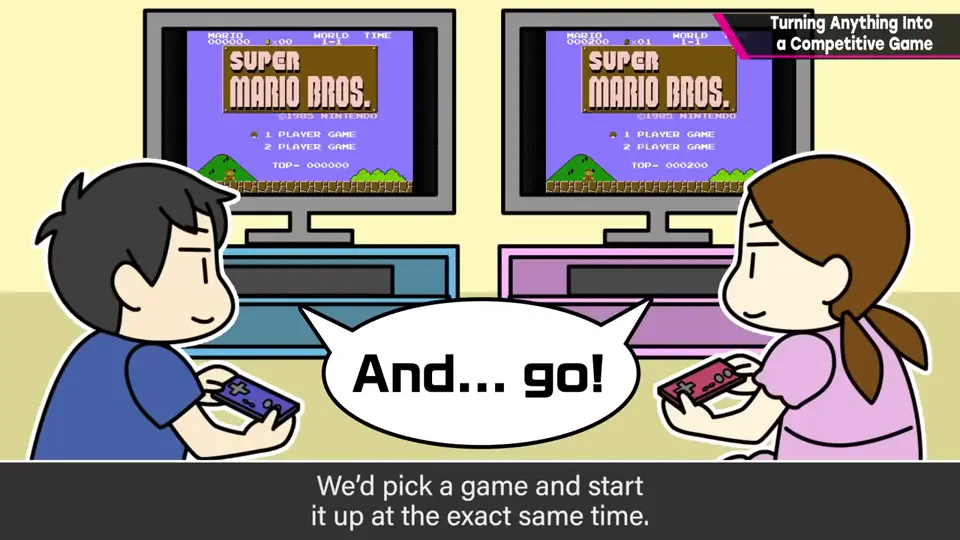
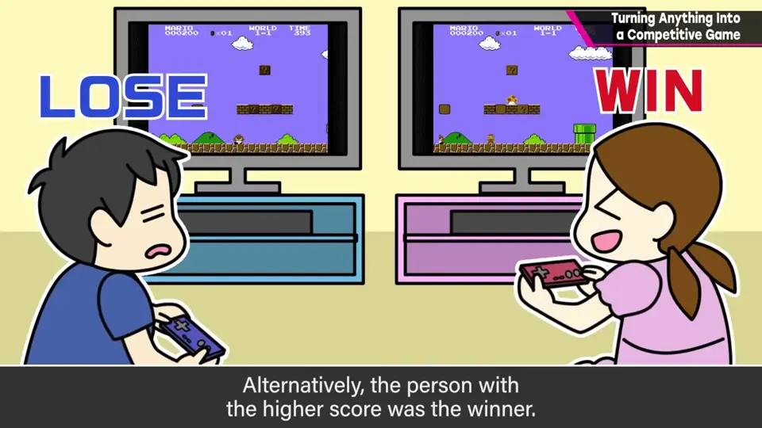
2. 与《游戏中心 CX》 0:50
和《游戏中心 CX》合作时就是这个玩法：他和有野课长同时开始同一款游戏比拼。特别适合一下就失误的街机游戏。
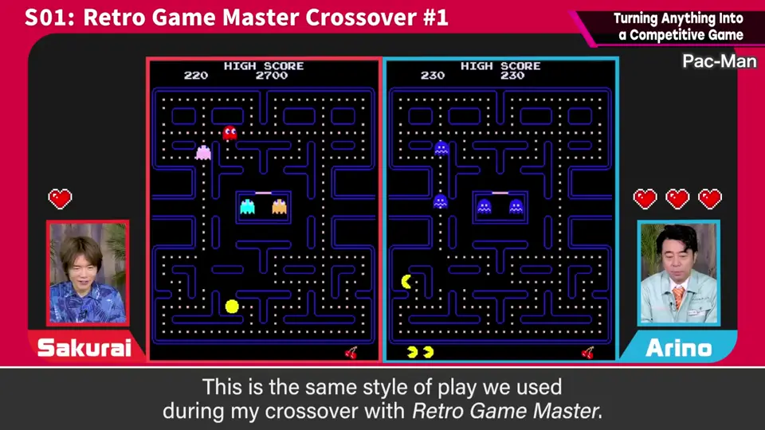
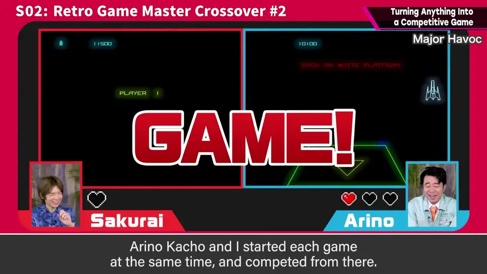
3. 设定目标 1:10
有些游戏可以设定目标：走得更远者胜、先到终点者胜。
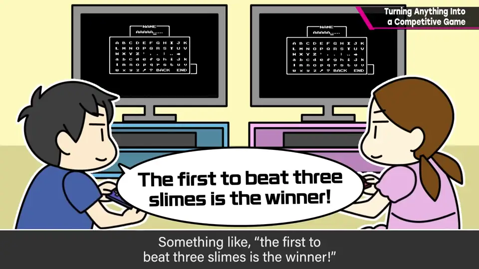
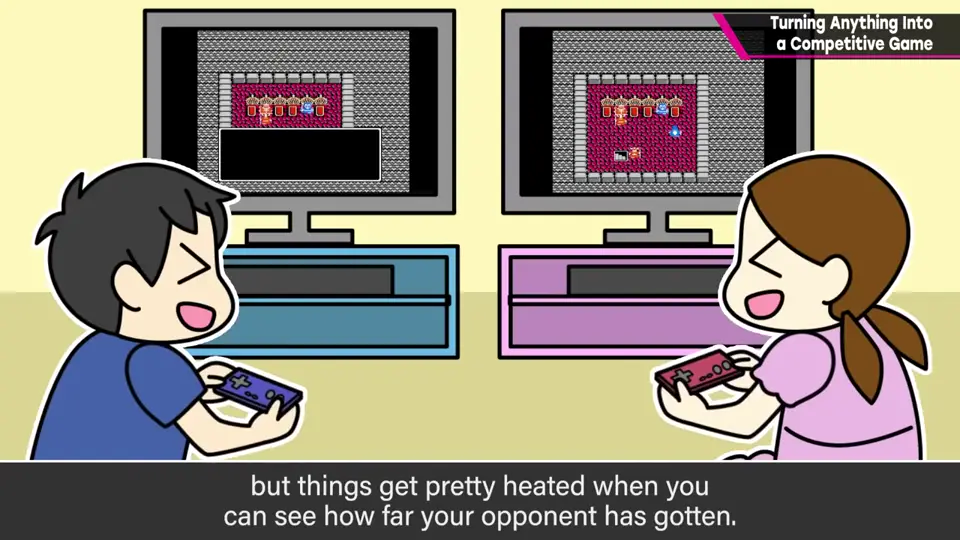
看似非常简单，但能看到对手的进度，相当热闹。
4. 换下一款！ 1:32
一旦失误或分出胜负，就算还想往下玩也立刻切换下一款。至少会玩几十款，感觉在考验各种「游戏肌肉」。
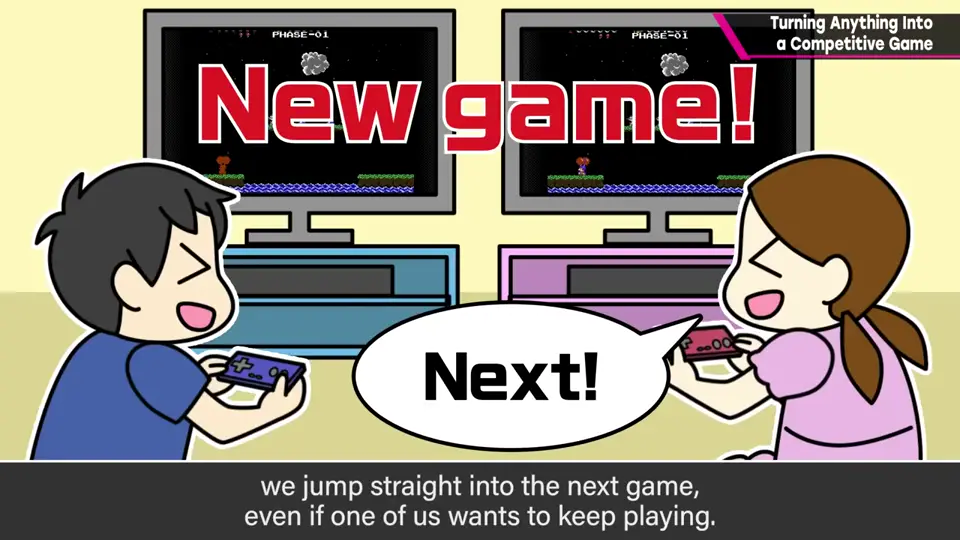
5. 怎么准备 1:44
- 需要让同一软件运行两份。
- 朋友间可各带加入 Nintendo Switch Online 的 Switch。
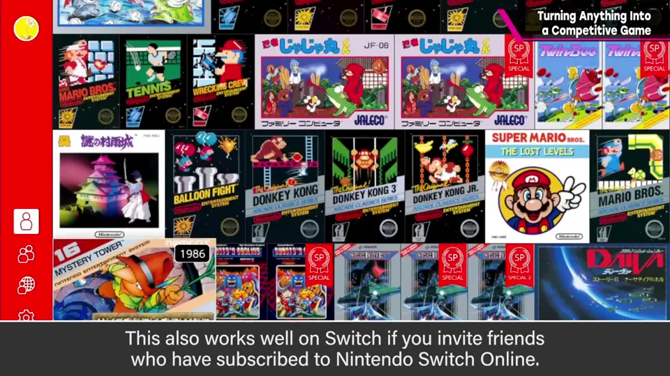
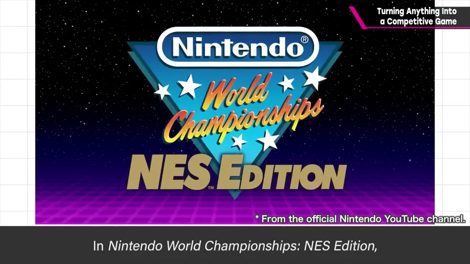
- 《任天堂世界锦标赛 FC 版》本身就有一款软件多人享受的机制。
自测题
1. 「同时进行对战」怎么玩？
两人同时开始同一款游戏，先失误者输或分数高者赢，结束立刻换下一款。 0:42
2. 怎样把《勇者斗恶龙》变成对战？
设定目标，例如先打倒 3 只史莱姆的人获胜。 1:24
3. 这种玩法需要什么条件？
同一款软件能同时运行两份（例如各带一台加入 NSO 的 Switch）。 1:50